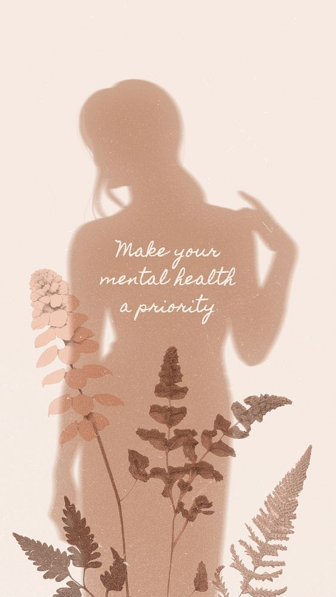

A lelki egészség ugyanolyan fontos, mint a fizikai. A stressz, a túlterheltség vagy a negatÍv gondolatok hosszú távon megbetegÍthetnek. Fontos, hogy idÅ‘t szánjunk önmagunkra, és megtaláljuk a belsÅ‘ harmóniát.
Tippjeink a lelki jóléthez:
- Napi 5 perc tudatos légzés vagy meditáció
- Írj hálanaplót – minden nap 3 dolgot, amiért hálás vagy
- Korlátozd a képernyőidőt lefekvés előtt
- Mozogj, sétálj a természetben
- Tölts időt szeretteiddel
Relaxációs gyakorlat:
- Ülj le kényelmesen.
- Hunyd be a szemed, figyeld a légzésed.
- Lélegezz lassan 4 másodpercig be, majd 6 másodpercig ki.
- Ismételd 5–10 percen keresztül.
